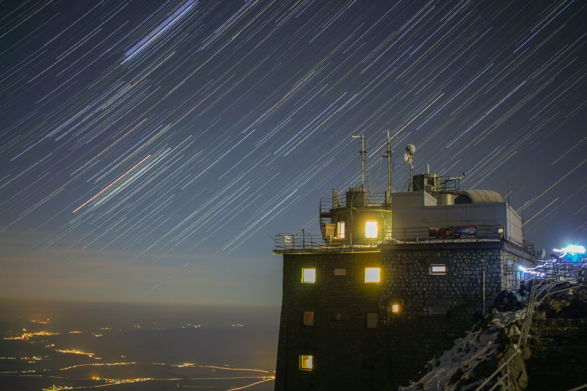
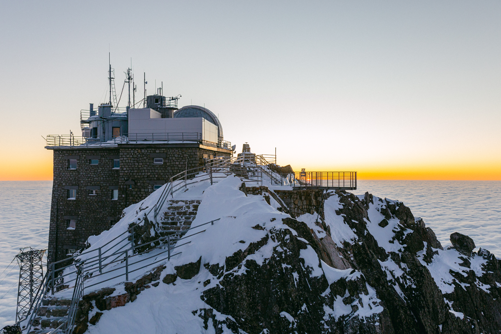

Lomnický štít
At 2634 m, our high-mountain laboratory has run a neutron monitor continuously since 1981 — more than four decades of cosmic ray measurements, now alongside a SEVAN particle monitor and high-energy photon observations during thunderstorms.

Our laboratory has recorded the secondary particles produced when cosmic rays strike the atmosphere without interruption for decades. Thin air, a stable rock platform and a maintained year-round presence make it one of the most valuable observing sites in Europe — and a place where an instrument can run for years rather than a campaign.
What the site offers
- Altitude and geomagnetic position — 2634 m a.s.l. in the High Tatras, a location with a well-characterised atmospheric and geomagnetic cut-off history.
- Continuous operation — the station is staffed and maintained through the year; instruments run 24/7 rather than in campaigns.
- Serviced infrastructure — mains power, network connectivity, heated instrument space and environmental monitoring.
- Access and logistics — the summit is reached by cable car; we handle transport, installation support and routine on-site attendance for hosted instruments.
- A reference dataset — anything installed here sits alongside one of the longest unbroken cosmic-ray records on Earth, which is itself a calibration resource.
Instruments in operation
The neutron monitor is the anchor instrument, feeding the global network used to study solar modulation, Forbush decreases and ground-level enhancements. It is supported by additional particle detectors and environmental sensors, all maintained and upgraded in-house by our engineering team.
Space physics measurements have been made on this peak since the first laboratory was built here in 1957, and the neutron monitor has been running since 1981. The scientific programme behind those measurements is described on the Research page.
Open access under OPENLABS SAV
As part of the OPENLABS SAV project we are building a dedicated open-access space here where partner institutions and companies can install and operate their own instruments. You bring the instrument; we provide the site and everything around it — protected instrument space, mains power and network connectivity for continuous operation and remote monitoring, environmental conditions recorded alongside your measurements, and transport, installation support and routine attendance by our staff.
It suits research groups needing a long-duration high-altitude platform, and companies validating sensors or space-qualified components under real conditions. Access is agreed individually — get in touch early, since site preparation and installation windows are limited by the season.
The science at Lomnický štít →
This page is a framework in the source site: the approved standfirst, the full instrument list (neutron monitor, SEVAN, thunderstorm high-energy photon observations), stated access terms and two photographs are still outstanding.
Talk to us about access
Tell us what you need to measure or test and we will tell you honestly whether our facilities fit. Both facilities are opened to partners under OPENLABS SAV (2026–2029, Programme Slovakia 2021–2027 · ERDF) — instrument hosting at Lomnický štít and serviced or supervised use of the cleanroom are agreed case by case, and enquiries about joint projects go to the same place.